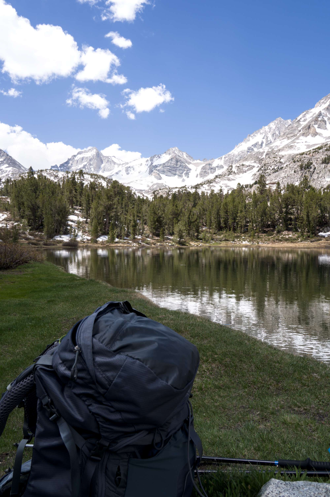
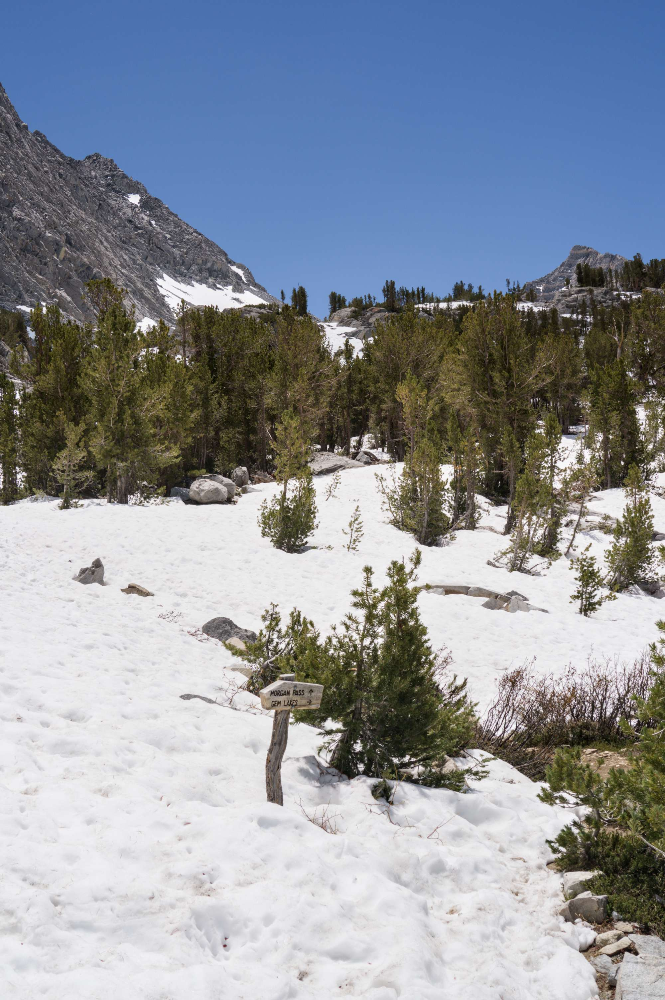
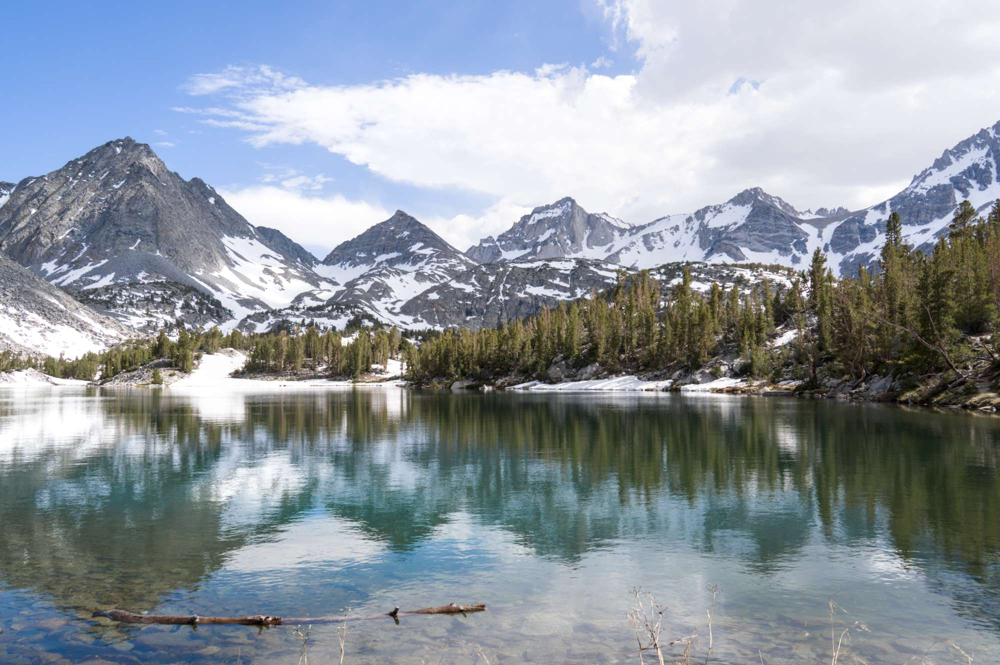
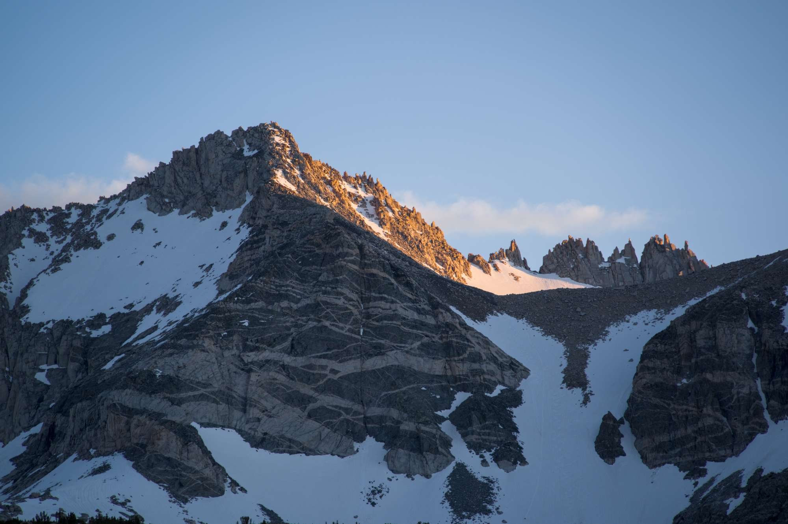

Little Lakes Valley (June 9–10, 2025)
On this trip, I was testing out a new tent, the Durston X-Mid 1. I loved it! It is so light (28 oz), so easy to set up (just 4–6 stakes), and so sturdy. I was such a fan that I went ahead and bought a pack from Durston right after the trip. What an awesome company with awesome design. But, onto the trip itself.
Day 0
After church and a meeting for VBS the following week, I started the long drive from the Bay Area to the trailhead, camping for the night at Sonora Pass. I am not too sure if camping is allowed at the pass (perhaps I need to go farther away from the trailhead next time for it to be legal), but I enjoy camping here the night before a trip for acclimatization. The air was crisp and chilly, a sweet respite from the heat of the Central Valley. I was feeling a bit congested from my Panda Express dinner (yum!), but nothing was coming out no matter how hard I tried. (I feel like when I squat #2, I can't get the "leverage" that I need. Is it just me?) After a bit of dawdling about, I hit the sack for the night in my new
Durston X-Mid 1, and I was soon fast asleep.
Day 1
I awoke to the soft sunrise light shining on my new
Durston X-Mid 1 and kept sleeping for an extra twenty minutes. Thankfully, it was not too cold, and I was able to get packed up fairly quickly. I started driving at around 7:00 am, and my first stop was Tioga Gas Mart. (Countless memories of this pretty little gas station!) I brushed my teeth in the bathroom (hopefully nobody was annoyed by me), threw away my trash, and I was on my way.
I got to Mosquito Flat trailhead by around 9:00 am or so, and after filtering a bit of water in the stream, I was on the trail by 9:30 am. It was a beautiful day—a Monday without too many day-hikers—and I took my time to slowly enjoy the trail, taking a few minutes to stop at each lake. The trail was muddy from the snowmelt, and the creek crossing before Long Lake was well beyond the normal levels. (Thankfully, there were some logs to cross on slightly upstream.)
Marsh Lake, where I stopped for a little snack
Box Lake, I think
Long Lake was where I encountered my first snow patch. On the way back the next day, it was melted enough for me to avoid it, but on the way up, I had to walk on top of it. You can see this in this photo:
I especially enjoyed looking at the beautiful metamorphic-looking rock bands on what I think is Treasure Peak? Correct me if I'm wrong:
I had a relaxing break for lunch at the grassy shore of Long Lake, watching the little trout flit back and forth in the clear water. I had graham crackers and some dried mango chunks. It was beautiful, and filling!

At Long Lake
At the trail junction for Chickenfoot Lake, I stashed my bear can and all my camping gear to set off on a little day hike to Gem Lakes and Treasure Lakes. On the way to Gem Lake, I encountered the first serious snow of the day, and it was rapidly getting soft, it now being around noontime. This made for some unpleasant travel, and I was plunging into the snow every other step.
On the way to Gem Lake, with Pyramid Peak and Rosy Finch Peak up above

The junction for Morgan Pass
After a short while, I was happily at Gem Lakes with feet soaking wet, and I was treated to a wonderfully beautiful sight of its deep turquoise color surrounded by snowfields that plunged into the lake. I spent a while just marvelling at its exquisite color:
I circled around the north side of the lake, trying to find the easiest way to ascend the ridge dividing Gem Lakes from Treasure Lakes. This was not too difficult, and I simply referenced the slope angle shading on my Caltopo map. It was steep and rocky, but I soon topped out with a nice view of Treasure Lakes, which was still frozen over and surrounded by snow. There was too much snow, so I didn't bother going down to the lakes themselves. Originally, I had hoped to make my way up to Dade Lake as well, but the snow was too soft for efficient travel, so I scrapped this idea and decided to head back. Unfortunately, my way back was less than ideal. I could have headed directly down Rock Creek, but it was covered in snow and I did
not want to risk falling into any snow bridges. I elected to, according to my plan, simply head directly down the ridge northeast of Treasure Lakes towards Chickenfoot Lake.
Looking back at Treasure Lakes with Bear Creek Spire in the background
A moody looking Mt. Dade underneath afternoon Sierra clouds
A more happy looking Bear Creek Spire
Looking down the valley to Long Lake
The snow was starting to be so soft that I didn't know whether I would plunge six inches or six feet on my next step. Unfortunately, there was no way back that involved only travel on dry ground. Furthermore, some parts of the descent were snowfields that were around 45 degrees steep. This was very annoying, and I was pissed at myself for doing this, because my legs were starting to get tired. It seemed like I was getting cliffed out every way that I went. After what seemed like hours, I finally was able to make it down to the grassy meadows south of Long Lake.
A sample of some of my post-holing
The meadow south of Long Lake, near the junction to Chickenfoot Lake, looking north to Mt. Starr
I rejoined the trail and started looking for my stashed gear, hiking almost all the way down to Long Lake before realizing that all my stuff was
south of where I rejoined the trail. I picked up my stuff and headed to the northwest shore of Chickenfoot Lake, where I found a nice little campground. Unfortunately, there was an illegal fire pit too.

Incredible colors on Chickenfoot Lake in the afternoon light
I had a few hours to spare, so I took a quick "shower." (Basically, I filled one water bottle with soapy water and another with clean water. [The soap was biodegradable of course.] Then I just poured soapy water onto my hair, rubbed it in, and rinsed. This was, of course, done away from the lake itself. It didn't work that well, since my hair was still pretty oily, but I felt reasonably refreshed and somewhat clean.) I set up my ground tarp, leaned against my bear canister, and read for a few hours—
Faithful Reason: Natural Law Ethics for God's Glory and Our Good by Andrew T. Walker, a book for my Christian Ethics class.
That night, I had Mountain House Chicken Fried Rice. It was delicious, but in the future I am considering switching to Peak Refuel meals, because they have more calories per bag.
Somehow, there was this one lone mosquito (I had not seen any the entire trip) that proceeded to bite me on the wrist. How annoying. It quickly received a deserved smite, and this lone ranger mosquito was swiftly brought to justice.
After a pleasant and quiet evening, I went to bed that night listening to Debussy, along with a choir of frogs croaking from the nearby pond.

Pip-Squeak Spire
Rosy Finch Peak
Bear Creek Spire
After sunset
Day 2
I was up at the crack of dawn and on the trail by 6:30 am. Originally, I had planned to climb Mt. Starr, but I was exhausted, my legs were sore, and I was craving actual food. So much for grit and determination. The thought of Panda Express sent me flying down the trail, and I was back at the car by around 8:00 am, and back at Panda Express at around 1:30 pm. This was a wonderful way to end this short little trip in some very scenic backcountry.
{kind=link}
{kind=link}
{kind=link}
{kind=link}
{kind=link}
{kind=link}
{kind=link}
{kind=link}
{kind=link}
{kind=link}
{kind=link}
{kind=link}
{kind=link}
{kind=link}
{kind=link}
{kind=link}
{kind=link}
{kind=link}
{kind=link}
{kind=link}